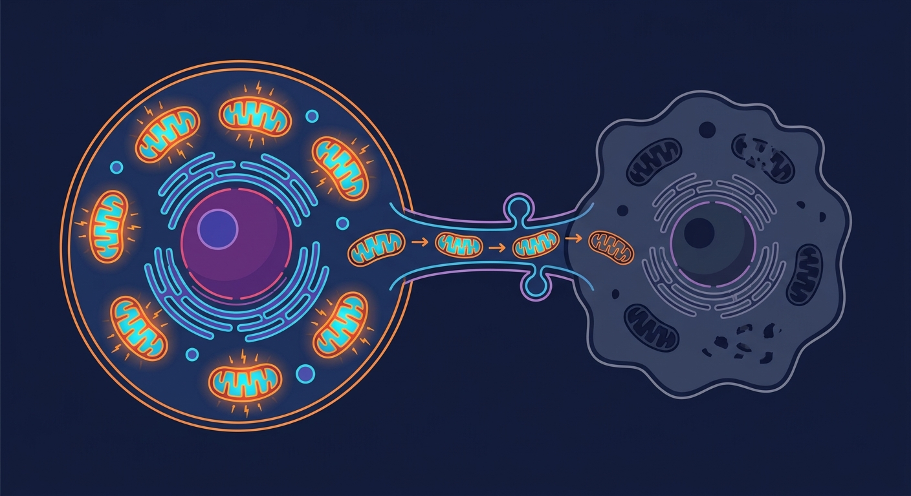

Cellular Battery Swapping: Bioengineering the Next Frontier in Tissue Rejuvenation

Imagine a smart power grid during a local blackout, where functional microgrids automatically reroute high-voltage electricity into failing hospitals and homes. Deep inside human tissue, a remarkably similar emergency response occurs at the cellular scale. When cells undergo metabolic collapse due to injury, inflammation, or biological aging, neighboring healthy cells can extend microscopic bridges—known as tunneling nanotubes—or dispatch membrane-bound vesicles to ship fully functional mitochondria across cellular borders. This phenomenon of intercellular mitochondrial transfer is effectively biological battery swapping, offering a profound natural mechanism to rescue damaged tissues and reset cellular bioenergetics.
Mitochondria are the primary energetic engines of human cells, but as time takes its toll, their genomes accumulate mutations, structural integrity degrades, and ATP production plummets. This bioenergetic decay is a primary driver of diverse pathologies, ranging from heart failure and muscle wasting to neurodegeneration. Traditional pharmacology has largely focused on stimulating worn-out organelles or dampening the resulting oxidative stress. However, organelle therapeutics offers a far more radical intervention: physically replacing the broken power plants. As highlighted in a comprehensive review in Science Advances, bioengineers are moving beyond observing this natural transfer to actively supercharging it—modifying cellular adhesion molecules, utilizing magnetic guidance, and building biomaterial scaffolds to direct mitochondrial trafficking precisely where it is needed most.
The therapeutic implications for regenerative medicine are vast. By augmenting mitochondrial availability and donor-recipient connectivity, researchers can systematically re-establish metabolic competence in tissues previously deemed irrecoverable. In ischemic cardiac tissue, supercharged mitochondrial delivery can rapidly suppress cell death pathways and initiate structural repair. In damaged neural networks or metabolic organs, injecting bioengineered stem cells designed for hyper-transfer of mitochondria could restore metabolic flux, cool inflammation, and revitalize cellular function. By treating whole organelles as programmable drugs, bioengineers are opening a path toward true metabolic rejuvenation.
Yet, turning cellular power-sharing into a scalable clinical reality presents formidable hurdles. Natural transfer mechanisms remain notoriously stochastic and difficult to regulate; delivering too many organelles or disrupting donor cell bioenergetics could trigger metabolic toxicity or compromise donor cell survival. Crucially, exogenous mitochondria face aggressive immune surveillance and rapid degradation by endolysosomal pathways before they can successfully fuse into host networks. Most current successes remain confined to isolated in vitro systems or highly controlled rodent models, where translation to complex human physiological environments remains unproven. Bridging the gap from bench to bedside will require overcoming immense biomanufacturing challenges, establishing strict quality controls for organelle purity, and demonstrating long-term integration without provoking systemic inflammatory backlashes.
Sources & Citations:
Primary Source: Augmenting intercellular mitochondrial transfer for tissue repair and rejuvenation. (Science advances)
- Primary Source: Augmenting intercellular mitochondrial transfer for tissue repair and rejuvenation. Science Advances. DOI: 10.1126/sciadv.aeg5364